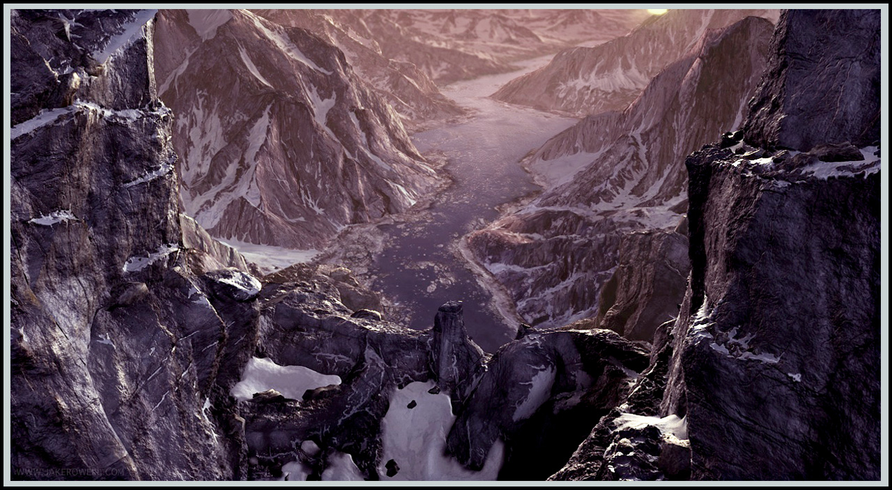

Government
None
Terrain
Ronina is a largely wild land. In the south is Karak Norn, which sets the tone for the region. It is largely hard to tame the vast trees and brambles and traveling through it is rough if not impossible. This is why the countries arround it have avoiding anexing it.
Common Wildlife
Foxes
Owls
Hawks
Snakes
Lizards
Various Insects
Areas of Note
Karak Norn - The Mountain of the Moles. Karak Norn is a very treaturious mountain range that keeps unwanted creatures out of the Empire of Haiwan. It like Ronina does not have any form of government besides the law of the land. This inturn allows large creatures such as foxes and coyotes to gain a foothold. It also allows for large bandit groups to flourish and hide out.

Other Regions
Home